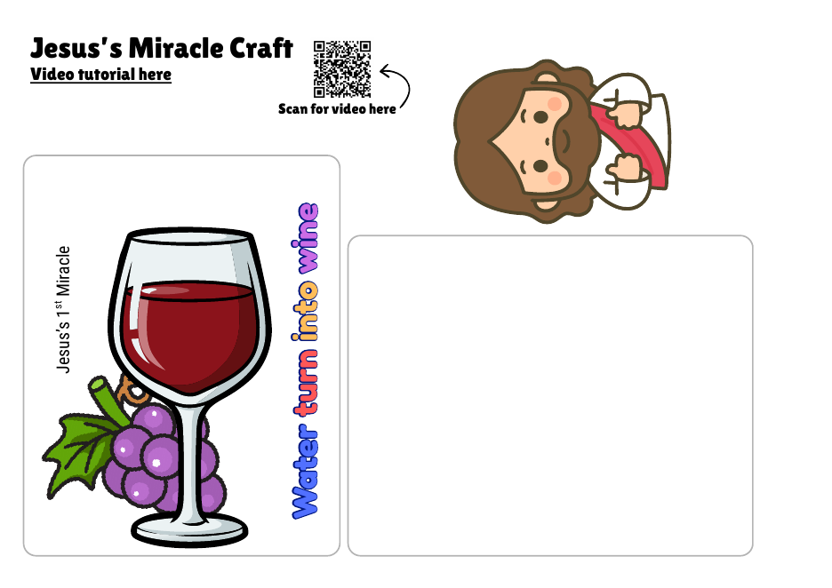

Welcome the children to our new series and get them thinking about parties and big problems.
A wet, fast relay race to fill the jars right up to the brim — just like the servants did at the wedding. And watch the water change colour as it goes in!
Setting Up
- Play outside if you can. Split the children into 2–4 even teams and line each team up behind a start line.
- Put a bucket of water and one big sponge at the start line for each team.
- About 8–10 metres away, put a clear jar or container for each team. Mark a “brim” line near the top with tape or a marker.
- The secret: before the children arrive, add a few drops of red and blue food colouring to the bottom of each jar. As the water goes in, it turns the colour of wine!
How to Play
- On “Go!”, the first child in each team soaks the sponge in the bucket.
- They run to their team’s jar, squeeze every drop of water in, then run back and hand the sponge to the next person.
- Keep going until one team fills their jar up to the brim line — they’re the winners!
Bible passage: John 2:1–11
Watch the video together, then take the online quiz to see what the children remember.
▶︎ Open the Video on YouTubeThe Story in Brief
Jesus, His mother Mary and His disciples were invited to a wedding in a town called Cana. In the middle of the party, the wine ran out! Mary came to Jesus and told Him about the problem. Then she said to the servants, “Do whatever He tells you.” Nearby stood six big stone water jars. Jesus told the servants, “Fill the jars with water,” and they filled them right up to the brim. Then He said, “Now take some out and give it to the man in charge of the party.” When the man tasted it, the water had become wine — and not just any wine, the very best! He said to the bridegroom, “You have saved the best wine until now!” This was the first miracle Jesus did. It showed His glory, and His disciples believed in Him.
Jesus Connection: Only God can turn plain water into wine with just a word. This miracle was a sign that showed us who Jesus is — God’s own Son, with power over everything He made. When things went wrong at the party, Jesus didn’t just fix the problem, He gave them something even better. That’s what Jesus came to do for us. Our biggest problem is sin, and we can’t fix it ourselves. But Jesus died on the cross and rose again to take our sin away and give us something far better — new life with God forever. His disciples saw His glory and believed in Him, and we can trust Him too.
🙏 Prayer
Father, thank You for Jesus, who can do what no one else can do. Thank You that He turned water into the very best wine and showed us His glory. Thank You that He came to give us something even better — forgiveness and new life with You. Help us to believe in Him and to do whatever He tells us, just like the servants did. Amen.
Children make a card with a window showing an empty glass of water. Slide the layers into the pocket, and the glass fills with wine — Jesus’ first miracle!
Before the Session
- The template has two versions: pages 1–2 are black-and-white for colouring, and pages 3–4 are in full colour. Print one set per child (the card page and the pocket page).
- Cut a piece of clear plastic (acetate or a plastic sleeve) for each child, the same size as the blank rectangle on the template. This is the transparent layer.
- For younger children: cut out the pieces, the window and the clear layer ahead of time, so they can go straight to colouring, gluing and tracing.
- Print a few copies of the step-by-step guide for the tables.
Materials
- Printed craft template (one set per child)
- Clear plastic sheet — acetate or a cut-up plastic sleeve (one piece per child)
- Black marker (permanent works best on plastic)
- Scissors (or pre-cut pieces for younger children)
- Glue stick
- Crayons or markers (for the black-and-white version)
Steps
- Colour the template, then cut out all the pieces.
- Put glue on the grey areas of the pocket.
- Glue the white paper in place.
- Fold the paper over and glue the other side together to make the pocket.
- Fold the paper strip, and use it to join the top of the clear layer to the top of the coloured wine glass card.
- Lay the clear layer over the wine glass and trace the outline of the glass with a marker.
- Slide it into the pocket: clear layer at the front, the white paper in the middle to hide the colour, and the coloured wine glass at the back.
- Glue Jesus on top — and it’s done!
Printable Craft
Two files: the craft template (black-and-white and colour versions) and the step-by-step guide. The template has a QR code linking to a video tutorial.
